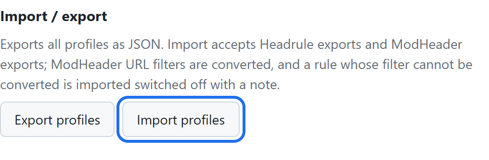

Looking for a ModHeader alternative? Here is what happened, and how to move your rules.
Short answer. ModHeader was removed from the Chrome Web Store and Edge Add-ons in July 2026. Headrule does the same core job, setting request and response headers per URL, and it imports your ModHeader export for free. No account, no analytics.
On this page: What happened What to check Move your rules What carries over FAQ
What happened to ModHeader
In July 2026 Google and Microsoft removed ModHeader from their extension stores. Security researchers at Stripe OLT had published an analysis reporting a dormant browsing-history collector in the extension, and they reported that it was switched off in the version they examined (read the report).
If ModHeader was removed from your browser, its saved profiles went with it. If it is still installed and opens, you can export your profiles now and bring them over.
What to check in any replacement
A header extension sits next to every request you make. Whatever you pick, Headrule or not, check these three things first.
- Does it need an account? Changing headers has nothing to do with who you are. If it asks you to sign in, find out what it stores and where.
- What permissions does it ask for? A tool built on Chrome's declarativeNetRequest needs that permission, storage, and site access. Extra permissions such as
webRequest,scriptingortabsmean it can do more than headers. - Can you read the source? You cannot check a minified bundle. You can check a public repository.
How Headrule answers each one: no account; its manifest has no content scripts and no webRequest; the source is on GitHub, and the only fetch() in it is the Pro license check.
Move your rules in three steps
- Export from ModHeader. If ModHeader still opens, use its export option to save your profiles as a JSON file.
- Install Headrule from the Chrome Web Store. It is free.
- Open Options → Import profiles and pick the file. Import is free. Then choose the profile in the popup.

No export file? Then the rules have to be typed in again. A URL filter like ||api.example.com covers one domain and its subdomains. The filter cheat sheet covers the rest.
What carries over from a ModHeader export
| In your ModHeader file | In Headrule |
|---|---|
| Profile names | Imported |
| Request and response headers | Imported, with their on/off state and comments |
| URL filters | Imported. Common patterns become plain filters; other regular expressions stay as regex (Pro) |
| Exclude, tab, window, resource-type and time filters | Imported switched off, with a note, so nothing is sent where you did not intend |
| Cookie, Set-Cookie, CSP and URL replacement entries | Skipped. The import tells you how many |
Questions
ModHeader is gone from my browser. Can I get my rules back?
Not from Chrome. When an extension is removed, Chrome deletes its storage too. If you exported a JSON file at any point, import that. Otherwise the rules need to be recreated.
Is Headrule free?
Yes. Free covers unlimited header rules, URL filters, one profile, and import and export including ModHeader files. Pro is $9 once, not a subscription, and adds unlimited profiles, regex URL filters and sync through your own Chrome account.
Does it work in Edge, Brave or Arc?
Yes. Any Chromium-based browser that installs from the Chrome Web Store.
Why does Chrome say it can read and change data on all websites?
A rule with an empty URL filter has to apply everywhere, so site access is needed. Headrule uses it only to hand your rules to Chrome's own request engine. It runs no code inside pages.
Is Headrule related to ModHeader?
No. It is an independent project by one developer, built after ModHeader was removed.
Get your headers working again
Free to install. Import your ModHeader file in a minute.